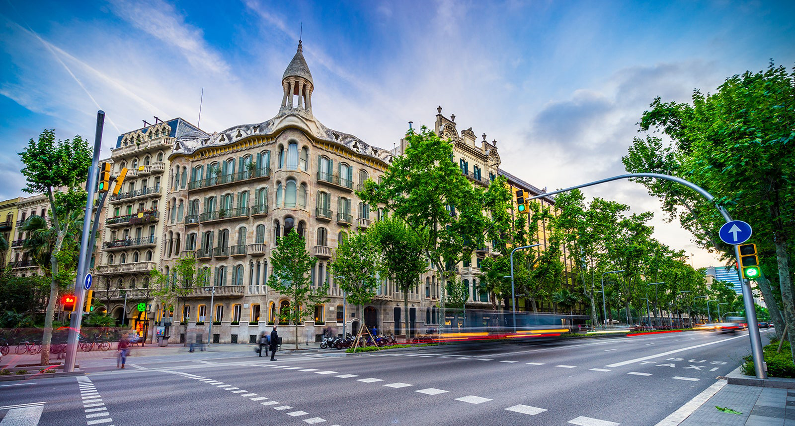

Apresentação


Nascido em Curitiba (Paraná, Brasil), estudante, cursando o 1º ano do Ensino Médio, músico, cursando ciência da computação na universidade de Harvard (CS50), tendo concluído cursos de desenvolvimento web, tendo muito interesse nas ciências exatas, especialmente na área da matemática.
Mais informações nas páginas ao lado.